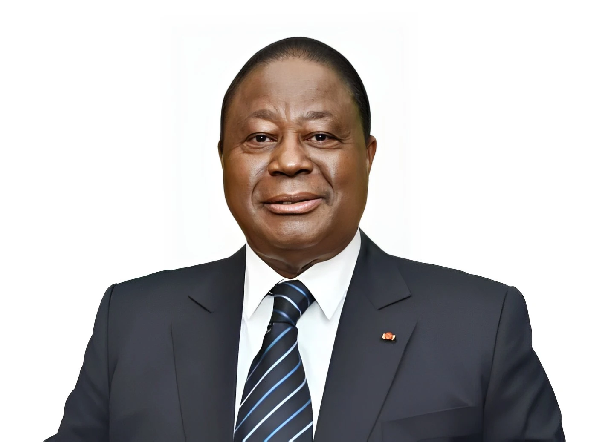
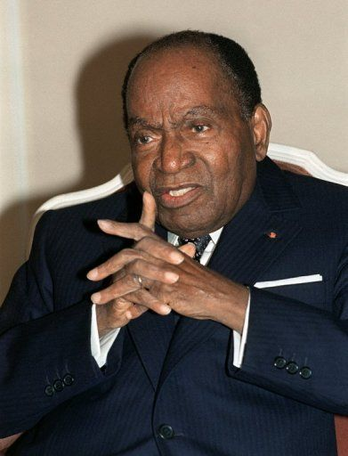

Retour

QUESTION 2: Qui est le premier PRESIDENT de la Côte d'Ivoire
Correction
Reponse: FAUSSE
Note: 00/10
Appréciation
Désolé, le prémier président de la Côte d'Ivoire n'est pas Henri Konan Bédié , mais plutôt Félix Houphouët-Boigny.
merci et à Bientôt !!!
Correcteur: MAHAMAN KAMAGATE.


Correction
Reponse: VRAIE
Note: 10/10
Appréciation
Félicitation, vous avez trouvé la bonne réponse,Félix Houphouët-Boigny est le prémier président de la Côte d'Ivoire.
merci et à Bientôt !!!
Correcteur: MAHAMAN KAMAGATE.